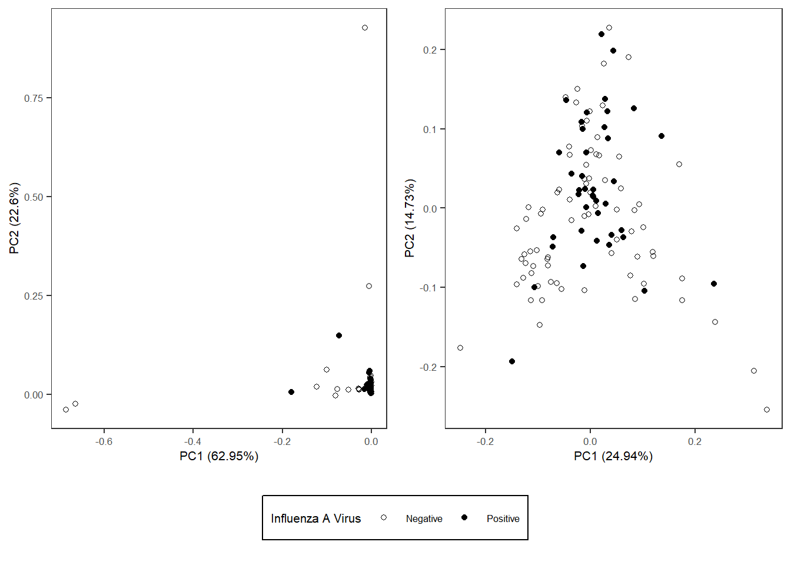
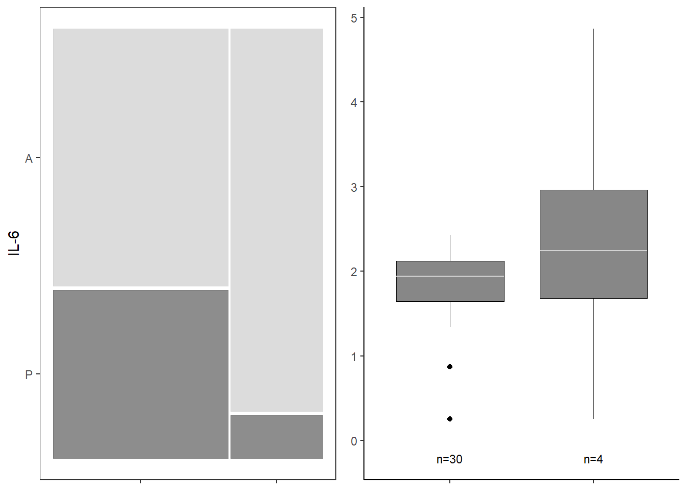
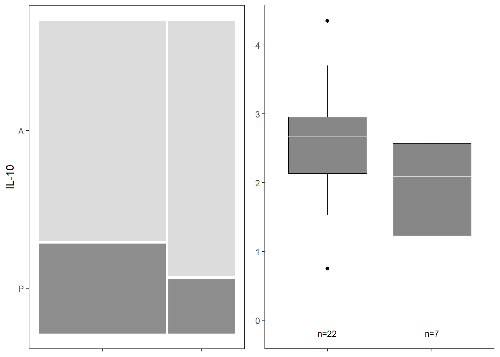
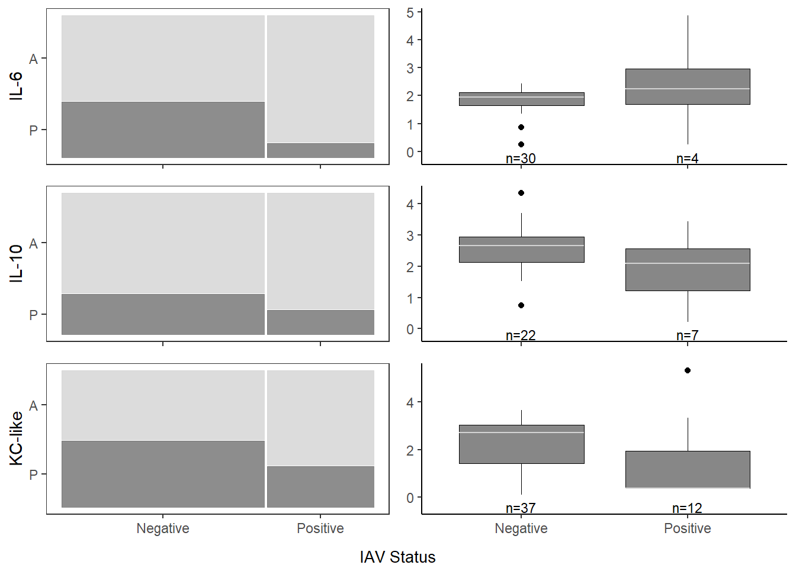
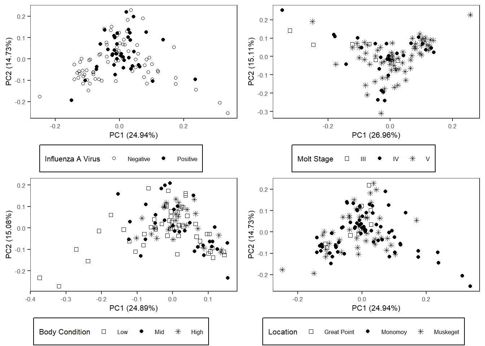
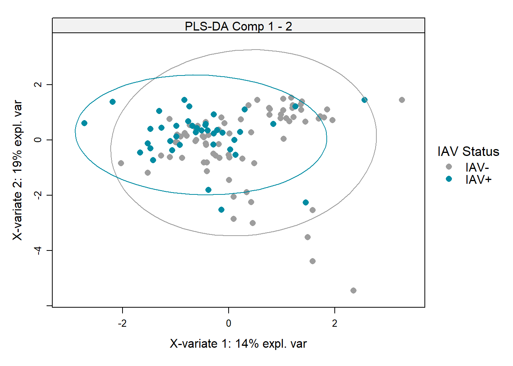
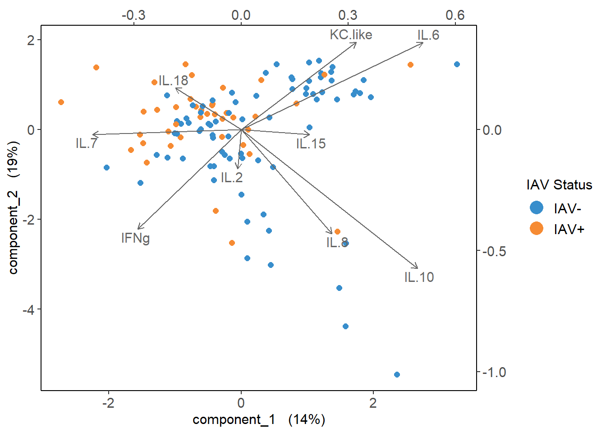
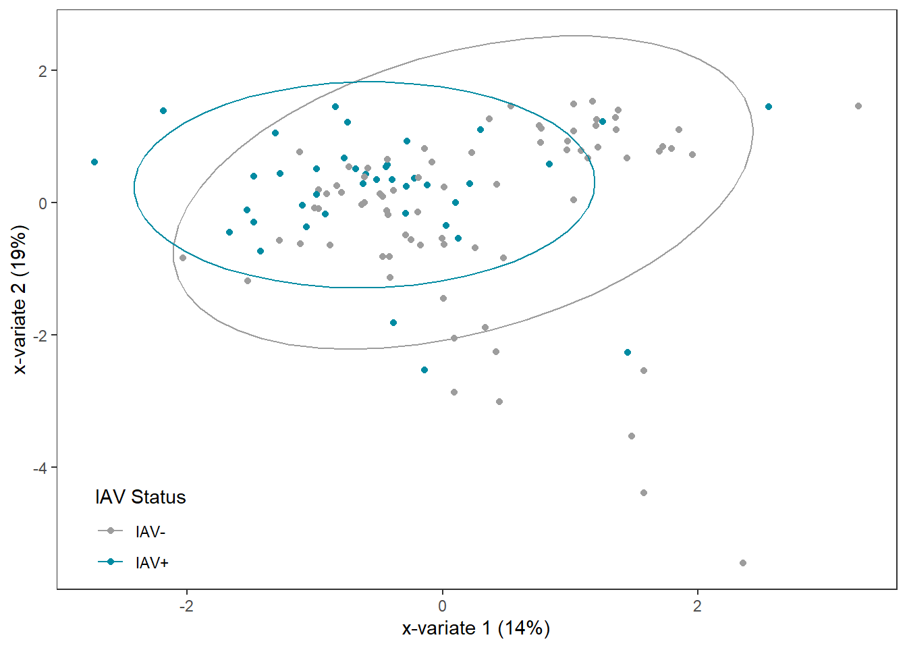

Chapter 5 Multivariate Cytokine ~ IAV Stats
5.2 Read in data
cyto <- read.csv("Output Files/cleaned_cytokine.csv")
meta <- read.csv("Output Files/metadata_cyto.csv")
mindc <- read.csv("Input Files/mindc.csv") %>%
mutate(half=value/2)
cytobin <- read.csv("Output Files/cleaned_cytokine_bin.csv")
# Merge cytokine & metadata
data <- merge(cyto, meta, by="Sample")
databin <- merge(cytobin, meta, by="Sample")
# Get rid of variables that are not of interest & cytokines with < 10% (11) detections
data_tidy <-
data %>%
select(2:14) %>%
select_if(function(x) sum(x>0) > 11) %>%
mutate(iav=data$iav,
molt.stage=data$molt.stage,
bc_bin=data$bc_bin,
location=data$location,
stage=factor(data$stage, levels=c("control", "acute", "peak", "late")),
sample=data$Sample)5.3 PCA on raw cytokine data
# Infection
PCA_iav <- prcomp(data_tidy[,1:9], center=FALSE, scale=FALSE)
raw_iav <- autoplot(PCA_iav, data=data_tidy, shape="iav") +
scale_shape_manual(values=c(1,19), name="Influenza A Virus",
labels=c("Negative", "Positive")) +
theme_bw() +
theme(panel.grid=element_blank(), text=element_text(size=8),
legend.background=element_rect(size=0.5, linetype="solid", colour ="black"),
legend.position="bottom")
iav_legend<-get_legend(raw_iav)
legend<-as_ggplot(iav_legend)
raw_iav <-
raw_iav +
theme(legend.position="none")
# Molt Stage
data_raw_molt <-
data_tidy %>%
filter(!is.na(molt.stage))
PCA_molt <- prcomp(data_raw_molt[,1:9], center=FALSE, scale=FALSE)
raw_molt <- autoplot(PCA_molt, data=data_raw_molt, shape="molt.stage") +
scale_shape_manual(values=c(0,16,8,2), name="Molt Stage") +
theme_bw() +
theme(panel.grid=element_blank(), text=element_text(size=8),
legend.background=element_rect(size=0.5, linetype="solid", colour ="black"),
legend.position="bottom")
molt_legend<-get_legend(raw_molt)
legend<-as_ggplot(molt_legend)
raw_molt <-
raw_molt +
theme(legend.position="none")
# Body Condition
data_raw_bc <-
data_tidy %>%
filter(!is.na(bc_bin))
PCA_bc <- prcomp(data_raw_bc[,1:9], center=FALSE, scale=FALSE)
raw_bc <- autoplot(PCA_bc, data=data_raw_bc, shape="bc_bin") +
scale_shape_manual(values=c(0,16,8), name="Body Condition",
labels=c("Low", "Mid", "High")) +
theme_bw() +
theme(panel.grid=element_blank(), text=element_text(size=8),
legend.background=element_rect(size=0.5, linetype="solid", colour ="black"),
legend.position="bottom")
bc_legend<-get_legend(raw_bc)
legend<-as_ggplot(bc_legend)
raw_bc <-
raw_bc +
theme(legend.position="none")
# Location
PCA_loc <- prcomp(data_tidy[,1:9], center=FALSE, scale=FALSE)
raw_loc <- autoplot(PCA_loc, data=data_tidy, shape="location") +
scale_shape_manual(values=c(0,16,8), name="Location") +
theme_bw() +
theme(panel.grid=element_blank(), text=element_text(size=8),
legend.background=element_rect(size=0.5, linetype="solid", colour ="black"),
legend.position="bottom")
loc_legend<-get_legend(raw_loc)
legend<-as_ggplot(loc_legend)
raw_loc <-
raw_loc +
theme(legend.position="none")5.4 PCA on log-transformed, scaled, centered cytokine data
# Make all non-detects half the limit of detection
data_half <- data_tidy
for (i in 1:nrow(data_half)) {
for (j in 1:9) {
{if (data_half[i,j]==0) {
k <- which(mindc==colnames(data_half)[j])
data_half[i,j] <- mindc[k,3]
}
else{next}
}
}
}
# Log transform, scale, and center data
data_log <-
data_half %>%
mutate_at(1:9, log)
data_scaled <-
data_half %>%
mutate_at(1:9, log) %>%
mutate_at(1:9, function(x) scale(x, center=TRUE, scale=TRUE))
# Infection Stage
PCA_scaled_iav <- prcomp(data_scaled[,1:9], center=FALSE, scale=FALSE)
scaled_iav <- autoplot(PCA_scaled_iav, data=data_scaled, shape="iav") +
scale_shape_manual(values=c(1, 19), name="Influenza A Virus",
labels=c("Negative", "Positive")) +
theme_bw() +
theme(panel.grid=element_blank(), text=element_text(size=8),
legend.background=element_rect(size=0.5, linetype="solid", colour ="black"),
legend.position="none")
# Molt Stage
data_scaled_molt <-
data_scaled %>%
filter(!is.na(molt.stage))
PCA_scaled_molt <- prcomp(data_scaled_molt[,1:9], center=FALSE, scale=FALSE)
scaled_molt <- autoplot(PCA_scaled_molt, data=data_scaled_molt, shape="molt.stage") +
scale_shape_manual(values=c(0,16,8,2), name="Molt Stage") +
theme_bw() +
theme(panel.grid=element_blank(), text=element_text(size=8),
legend.background=element_rect(size=0.5, linetype="solid", colour ="black"),
legend.position="none")
# Body Condition
data_scaled_bc <-
data_scaled %>%
filter(!is.na(bc_bin))
PCA_scaled_bc <- prcomp(data_scaled_bc[,1:9], center=FALSE, scale=FALSE)
scaled_bc <- autoplot(PCA_scaled_bc, data=data_scaled_bc, shape="bc_bin") +
scale_shape_manual(values=c(0,16,8), name="Body Condition") +
theme_bw() +
theme(panel.grid=element_blank(), text=element_text(size=8),
legend.background=element_rect(size=0.5, linetype="solid", colour ="black"),
legend.position="none")
# Location
PCA_scaled_loc <- prcomp(data_scaled[,1:9], center=FALSE, scale=FALSE)
scaled_loc <- autoplot(PCA_scaled_loc, data=data_scaled, shape="location") +
scale_shape_manual(values=c(0,16,8), name="Location") +
theme_bw() +
theme(panel.grid=element_blank(), text=element_text(size=8),
legend.background=element_rect(size=0.5, linetype="solid", colour ="black"),
legend.position="none")
cyto_pca_iav <- grid.arrange(arrangeGrob(raw_iav, scaled_iav, ncol=2),
arrangeGrob(iav_legend, ncol=1),
heights=c(5,1))
cyto_pcas <- grid.arrange(arrangeGrob(scaled_iav, scaled_molt, ncol=2),
arrangeGrob(iav_legend, molt_legend, ncol=2),
arrangeGrob(scaled_bc, scaled_loc, ncol=2),
arrangeGrob(bc_legend, loc_legend, ncol=2),
heights=c(5,1,5,1))
5.5 Test for normality
# Create dataframe for results
norm_results <- data.frame(matrix(ncol=0, nrow=9)) %>%
mutate(cyto=colnames(data_scaled)[1:9],
W=NA,
pvalue=NA)
# Truncate data
data_norm <-
data_scaled[,1:9]
# Test!
for (i in 1:9) {
test <- shapiro.test(data_norm[,i])
norm_results[i,2] <- round(test$statistic, digits=3)
norm_results[i,3] <- test$p.value
}
norm_results # all not normally distributed## cyto W pvalue
## 1 IFNg 0.921 3.985298e-06
## 2 IL.2 0.824 1.894239e-10
## 3 IL.6 0.620 7.082195e-16
## 4 IL.7 0.886 5.803970e-08
## 5 IL.8 0.364 3.175029e-20
## 6 IL.10 0.612 4.869702e-16
## 7 IL.15 0.408 1.413657e-19
## 8 IL.18 0.972 1.555482e-02
## 9 KC.like 0.571 7.627507e-175.6 Cramer Test
Multivariate composition of the cytokine pattern between each infection stage group with its control. It can handle multiple variables, potentially complex interactions and correlations.
# Separate data by infection stage
infected <-
data_scaled %>%
filter(iav=="pos") %>%
select(1:9) %>%
data.matrix()
uninfected <-
data_scaled %>%
filter(iav=="neg") %>%
select(1:9) %>%
data.matrix()
control <-
data_scaled %>%
filter(stage=="control") %>%
select(1:9) %>%
mutate_at(1:9, as.numeric) %>%
data.matrix()
acute <-
data_scaled %>%
filter(stage=="acute") %>%
select(1:9) %>%
mutate_at(1:9, as.numeric) %>%
data.matrix()
peak <-
data_scaled %>%
filter(stage=="peak") %>%
select(1:9) %>%
mutate_at(1:9, as.numeric) %>%
data.matrix()
late <-
data_scaled %>%
filter(stage=="late") %>%
select(1:9) %>%
mutate_at(1:9, as.numeric) %>%
data.matrix()
# Run Cramer Tests!
cramer.test(infected, uninfected)##
## 9 -dimensional nonparametric Cramer-Test with kernel phiCramer
## (on equality of two distributions)
##
## x-sample: 40 values y-sample: 76 values
##
## critical value for confidence level 95 % : 3.066126
## observed statistic 3.646416 , so that
## hypothesis ("x is distributed as y") is REJECTED .
## estimated p-value = 0.01298701
##
## [result based on 1000 ordinary bootstrap-replicates]##
## 9 -dimensional nonparametric Cramer-Test with kernel phiCramer
## (on equality of two distributions)
##
## x-sample: 52 values y-sample: 34 values
##
## critical value for confidence level 95 % : 3.316593
## observed statistic 3.209723 , so that
## hypothesis ("x is distributed as y") is ACCEPTED .
## estimated p-value = 0.06593407
##
## [result based on 1000 ordinary bootstrap-replicates]##
## 9 -dimensional nonparametric Cramer-Test with kernel phiCramer
## (on equality of two distributions)
##
## x-sample: 52 values y-sample: 6 values
##
## critical value for confidence level 95 % : 3.538807
## observed statistic 1.664969 , so that
## hypothesis ("x is distributed as y") is ACCEPTED .
## estimated p-value = 0.6753247
##
## [result based on 1000 ordinary bootstrap-replicates]##
## 9 -dimensional nonparametric Cramer-Test with kernel phiCramer
## (on equality of two distributions)
##
## x-sample: 52 values y-sample: 24 values
##
## critical value for confidence level 95 % : 3.30359
## observed statistic 2.948217 , so that
## hypothesis ("x is distributed as y") is ACCEPTED .
## estimated p-value = 0.0979021
##
## [result based on 1000 ordinary bootstrap-replicates]5.7 Cytokine Importance
# Prepare data for CART
data_cart <-
lapply(data_scaled, c) %>%
data.frame() %>%
select(!location & !molt.stage & !bc_bin & !stage & !sample) %>%
mutate(iav=factor(iav))5.7.1 Cross Validation
# Creating task and learner
task <- as_task_classif(iav ~ .,
data = data_cart)
task <- task$set_col_roles(cols="iav",
add_to="stratum")
learner <- lrn("classif.rpart",
predict_type = "prob",
maxdepth = to_tune(2, 5),
minbucket = to_tune(1, 30),
minsplit = to_tune(1, 30)
)
# Define tuning instance - info ~ tuning process
instance <- ti(task = task,
learner = learner,
resampling = rsmp("cv", folds = 10),
measures = msr("classif.auc"),
terminator = trm("none")
)
# Define how to tune the model
tuner <- tnr("grid_search",
batch_size = 10
)5.7.2 Variable Importance Plot
varimp <-
data.frame(imp=cart_model$variable.importance) %>%
rownames_to_column() %>%
rename("variable" = rowname) %>%
arrange(imp) %>%
mutate(variable=gsub("\\.","-",variable),
variable = forcats::fct_inorder(variable))
varimp_plot <- ggplot(varimp) +
geom_segment(aes(x = variable,
y = 0,
xend = variable,
yend = imp),
size = 1.5,
alpha = 0.7) +
geom_point(aes(x = variable,
y = imp),
size = 4,
show.legend = F,
col="black") +
labs(x="Cytokine",
y="Variable Importance") +
coord_flip() +
theme_classic() +
theme(text=element_text(size=10, color="black"))## Warning: Using `size` aesthetic for lines was deprecated in ggplot2
## 3.4.0.
## ℹ Please use `linewidth` instead.
## This warning is displayed once every 8 hours.
## Call `lifecycle::last_lifecycle_warnings()` to see where this
## warning was generated.# Separating out IL-6 (proinflammatory), IL-10 (antiinflammatory), and KC-like
databin <-
databin %>%
mutate(iav=gsub("neg", "Negative", iav),
iav=gsub("pos", "Positive", iav))
data <-
data %>%
mutate(iav=gsub("neg", "Negative", iav),
iav=gsub("pos", "Positive", iav))
## Proportions
il6_prop <-
databin %>%
mutate(IL.6=gsub("1", "P", IL.6),
IL.6=gsub("0", "A", IL.6),
IL.6=factor(IL.6, levels=c("P", "A"))) %>%
ggplot(data=.) +
geom_mosaic(aes(x=product(IL.6,iav), fill=IL.6)) +
scale_fill_manual(values=c("P"="#717171", "A"="lightgray")) +
labs(y="IL-6") +
theme_bw() +
theme(panel.grid.major = element_blank(),
panel.grid.minor = element_blank(),
axis.title.x = element_blank(),
axis.text.x= element_blank(),
legend.position="none")
il10_prop <-
databin %>%
mutate(IL.10=gsub("1", "P", IL.10),
IL.10=gsub("0", "A", IL.10),
IL.10=factor(IL.10, levels=c("P", "A"))) %>%
ggplot(data=.) +
geom_mosaic(aes(x=product(IL.10,iav), fill=IL.10)) +
scale_fill_manual(values=c("P"="#717171", "A"="lightgray")) +
labs(y="IL-10") +
theme_bw() +
theme(panel.grid.major = element_blank(),
panel.grid.minor = element_blank(),
axis.title.x = element_blank(),
axis.text.x = element_blank(),
legend.position="none")
kc_prop <-
databin %>%
mutate(KC.like=gsub("1", "P", KC.like),
KC.like=gsub("0", "A", KC.like),
KC.like=factor(KC.like, levels=c("P", "A"))) %>%
ggplot(data=.) +
geom_mosaic(aes(x=product(KC.like,iav), fill=KC.like)) +
scale_fill_manual(values=c("P"="#717171", "A"="lightgray")) +
labs(y="KC-like") +
theme_bw() +
theme(panel.grid.major = element_blank(),
panel.grid.minor = element_blank(),
axis.title.x = element_blank(),
legend.position="none")
## Concentrations
il6 <-
data %>%
select(iav, IL.6) %>%
filter(!IL.6 == 0) %>%
ggplot(., aes(x=iav, y=log(IL.6))) +
geom_boxplot(color="black", fill="#878787", lwd=0.25) +
labs(x=NULL, y=NULL) +
stat_n_text(size=3) +
theme_classic() +
theme(axis.text.x=element_blank())
dat <- ggplot_build(il6)$data[[1]]
il6 <-
il6 +
geom_segment(data=dat, aes(x=xmin, xend=xmax,
y=middle, yend=middle), colour="lightgray")
il10 <-
data %>%
select(iav, IL.10) %>%
filter(!IL.10 == 0) %>%
ggplot(., aes(x=iav, y=log(IL.10))) +
geom_boxplot(color="black", fill="#878787", lwd=0.25) +
labs(x=NULL, y=NULL) +
stat_n_text(size=3) +
theme_classic() +
theme(axis.text.x=element_blank())
dat <- ggplot_build(il10)$data[[1]]
il10 <-
il10 +
geom_segment(data=dat, aes(x=xmin, xend=xmax,
y=middle, yend=middle), colour="lightgray")
kclike <-
data %>%
select(iav, KC.like) %>%
filter(!KC.like==0) %>%
ggplot(., aes(x=iav, y=KC.like)) +
geom_boxplot(color="black", fill="#878787", lwd=0.25) +
labs(x=NULL, y=NULL) +
stat_n_text(size=3) +
theme_classic()
dat <- ggplot_build(kclike)$data[[1]]
kclike <-
kclike +
geom_segment(data=dat, aes(x=xmin, xend=xmax,
y=middle, yend=middle), colour="lightgray")
#################
il6_grid <- grid.arrange(il6_prop, il6, ncol=2)## Warning: The `scale_name` argument of `continuous_scale()` is deprecated
## as of ggplot2 3.5.0.
## This warning is displayed once every 8 hours.
## Call `lifecycle::last_lifecycle_warnings()` to see where this
## warning was generated.## Warning: The `trans` argument of `continuous_scale()` is deprecated as of
## ggplot2 3.5.0.
## ℹ Please use the `transform` argument instead.
## This warning is displayed once every 8 hours.
## Call `lifecycle::last_lifecycle_warnings()` to see where this
## warning was generated.## Warning: `unite_()` was deprecated in tidyr 1.2.0.
## ℹ Please use `unite()` instead.
## ℹ The deprecated feature was likely used in the ggmosaic
## package.
## Please report the issue at
## <https://github.com/haleyjeppson/ggmosaic>.
## This warning is displayed once every 8 hours.
## Call `lifecycle::last_lifecycle_warnings()` to see where this
## warning was generated.


cyto_grid <- grid.arrange(il6_grid, il10_grid, kc_grid,
ncol=1, heights=c(3, 3, 3.2),
bottom=textGrob("IAV Status", gp=gpar(fontsize=10)))

5.8 How different IAV+ and IAV- groups are
5.8.1 PLSDA
pls_x <-
data_cart[,1:9]
pls_y <-
data_cart %>%
mutate(iav=gsub("neg", "IAV-", iav),
iav=gsub("pos", "IAV+", iav),
iav=as.factor(iav)) %>%
select(iav)
# PCA Model (to compare)
pca <- pca(pls_x,
ncomp=9,
center=FALSE,
scale=FALSE)
plotIndiv(pca,
group=pls_y$iav,
ind.names=FALSE,
ellipse=TRUE,
legend=TRUE,
legend.title="IAV Status",
title="PCA")

# PLSDA Model
plsda_model <- mixOmics::plsda(pls_x,
pls_y$iav,
scale=FALSE,
ncomp=9)
plotIndiv(plsda_model,
ellipse=TRUE,
ind.names=FALSE,
col.per.group=c("#9d9d9d","#008ba2"),
pch=16,
legend=TRUE,
legend.title="IAV Status",
style="lattice",
title="PLS-DA Comp 1 - 2")
## Warning in biplot.mixo_pls(plsda_model, ind.names = FALSE, legend.title = "IAV
## Status"): The 'tune.spca' algorithm has used scale=FALSE. We recommend scaling
## the data to improve orthogonality in the sparse components.
# ggplot2
plsda_ggplot <-
data.frame(x = plsda_model$variates$X[,1],
y = plsda_model$variates$X[,2],
iav = plsda_model$Y)
iav_plsda_ggplot <-
ggplot(plsda_ggplot,
aes(x=x,
y=y,
col=iav)) +
geom_point() +
stat_ellipse() +
labs(x="x-variate 1 (14%)",
y = "x-variate 2 (19%)",
name="IAV Status") +
scale_color_manual("IAV Status",
values=c("#9d9d9d","#008ba2")) +
theme_bw() +
theme(panel.grid=element_blank(),
legend.position=c(0.1, 0.1))
iav_plsda_ggplot
5.8.2 2-D Kolmogorov-Smirnov test
ks_data <-
data.frame(plsda_model$variates$X,
iav=plsda_model$Y)
plsda_pos <-
ks_data %>%
filter(iav=="IAV+") %>%
select(comp1, comp2)
plsda_neg <-
ks_data %>%
filter(iav=="IAV-") %>%
select(comp1, comp2)
fasano.franceschini.test(plsda_pos, plsda_neg)##
## Fasano-Franceschini Test
##
## data: plsda_pos and plsda_neg
## D = 2496, p-value = 0.009795